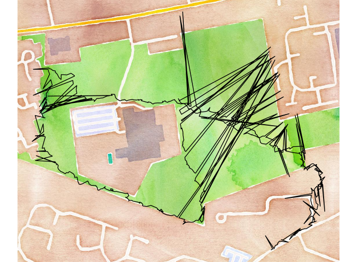
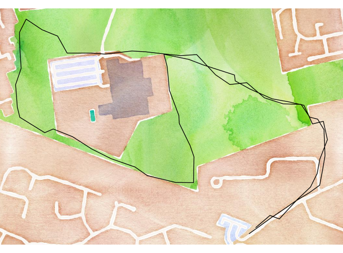

Logging and plotting GPS data
If you have an Android phone, Google may be tracking your every move through a service called Google Timeline. At the beginning of 2017 I turned this service off because it felt a bit creepy and I didn't see any benefits (incidentally withdrawing permission doesn't delete your old Timeline data).
Recently I had a change of heart and saw how interesting historical location data can be. Particularly for journalling things like old holidays. I wanted to try it again. But this time maintaining more control over the data. I wanted to:
- log my location passively and continually
- have immediate access to the data
- only use my smartphone
Logging GPS data
After reading
this article by bitinsomnia
GPSLogger for Android seemed like a good choice for these reasons:
- continual logging to a range of formats including CSV
- automatic upload to cloud storage such as DropBox
- battery efficient
I was impressed with how easy the app was to setup. After installing on my Android smartphone, I selected the following options (all other options were left on default):
- log to CSV
- log position every second
- allow auto sending
- send log files every minute
- send on WiFi only
- autosend to DropBox
I then hit the START LOGGING button in the app and took a walk. On my return I had a CSV file on DropBox with over a thousand rows - simple as that!
Plotting GPS data
A portion of the route is plotted here using the R package
ggmap:
library(ggmap)
gps_df <- read_csv("Dropbox/Apps/GPSLogger for Android/20180526.csv")
# Some data points have been removed
qmplot(lon, lat, data = gps_df, maptype = "watercolor")

The ggmap package exposes various online mapping services like Google Maps and OpenStreetMap. Here I used the watercolor Stamen Map simply because I like how they look. As you can see, there are some issues with the data:
- there are large errors in the path
- given the accuracy, the app is over-collecting (even when the path is relatively smooth)
- the app is collecting data while stationary inside buildings (wasting battery and adding errors)
Tweaking GPSLogger
To solve these issues I made the following changes to the options in GPSLogger for Android:
- change location providers to GPS only for better (although slower) location fixes
- change the distance filter from 0 to 10 metres to help avoid errors accumulating
- change the accuracy filter from 40 to 10 metres so data points are accurate to within 10 metres
- change the logging interval to 20 seconds
Here's the result from the second walk:

Pretty good! As expected, some small errors persist. But I'm happy with the overall accuracy and the rate at which data points are being logged. The app has been running continuously for a week now; the whole setup is automated, without noticable drain on battery.
Taking it further
I'm collecting this data with some kind of journal in mind. That might involve plotting single days like above. Or creating interactive visualisations for multiple days - perhaps something like
Google Timeline.
Another avenue would be to synthesise higher concepts from the data - such as journeys and stays. A stay could be defined as a location I have stayed at for longer than an hour, and a journey could be defined as the set of coordinates between stays.
I'm sure there are plenty more approaches to explore; including machine learning. In the meantime I'll continue logging my location in this way.
Home